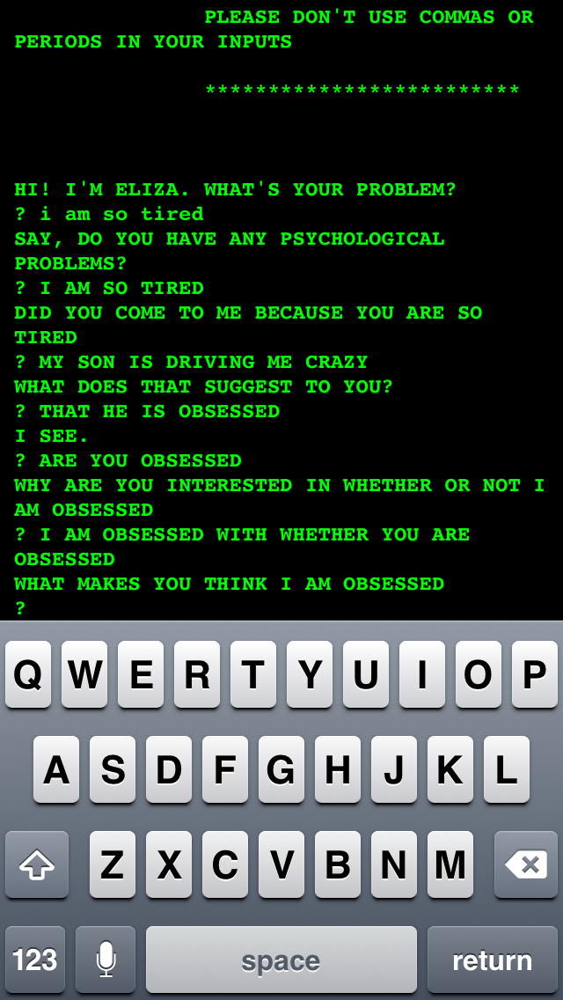
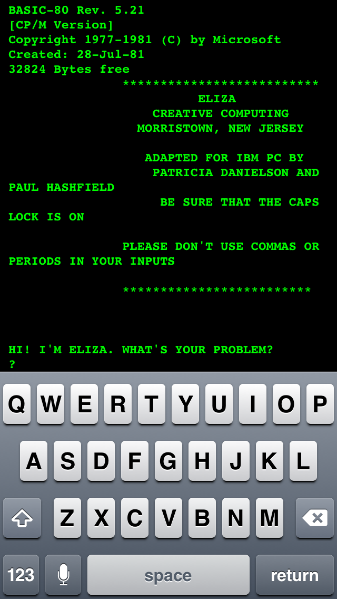
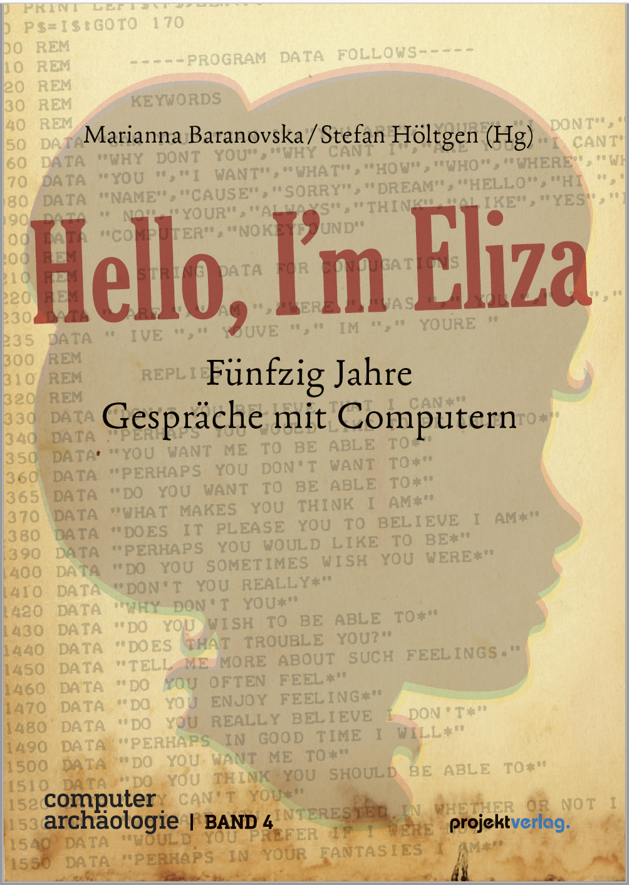
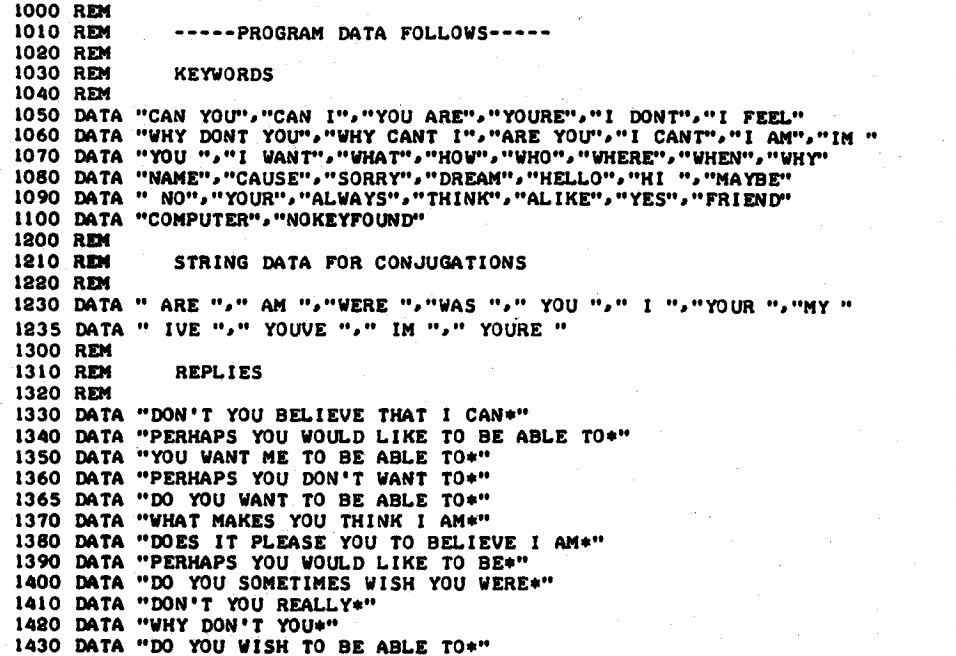
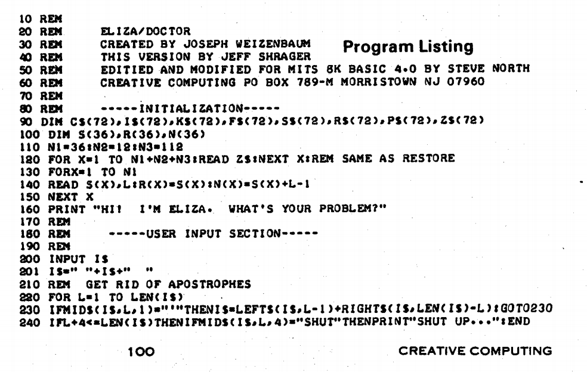
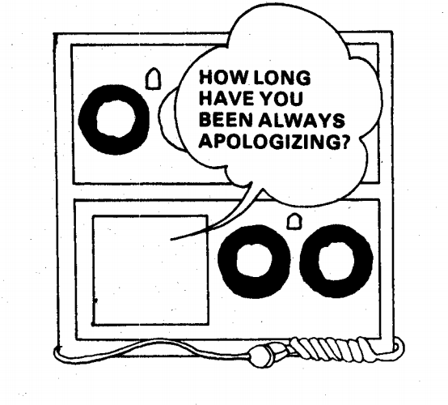
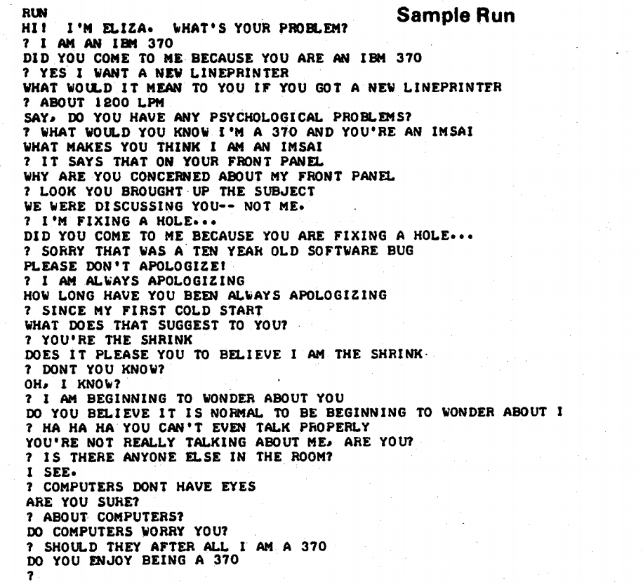
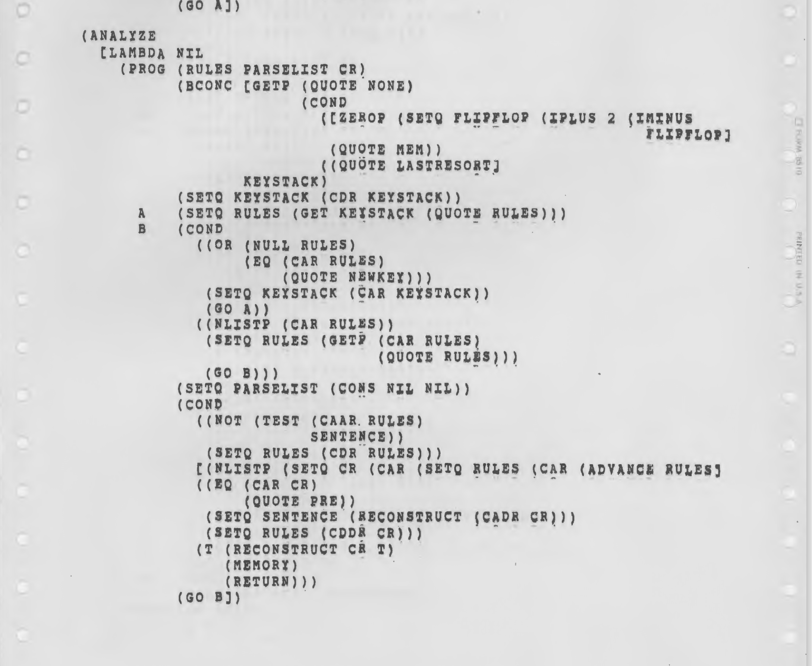
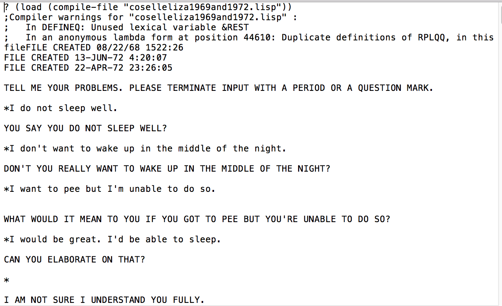

The Genealogy of ELIZA
This site is dedicated to tracing the legacy ofJoseph Weizenbaum's ELIZA (aka. Doctor) program. The site is curated by Jeff Shrager (jshrager@gmail.com). See the bottom of this page for additional members of "Team ELIZA". We thank CommerceNet for their support.
Latest News (click here to read the blog, and here for previous news)
20260718: A conversation between Peter G Neumann and the original ELIZA
Verifiable conversations between real people and Weizenbaum's original MAD-SLIP ELIZA are rare finds. Recently, Paul McJones (Computer History Museum), who has been organizing the late Peter G Neumann's papers, came across a conversation that appears to take place around 1966 between Neumann and a version of the original ELIZA. Neumann was one of the original MULTICS engineers and crossed paths with Weizenbaum at MIT. In fact, it was Weizenbaum who made the connection between the MULTICS project and GE (where Weizenbaum worked before coming to MIT), which led to MULTICS being built on GE hardware.
Adam Gordon Bell, who creates the CoRecursive Podcast, interviewed Jeff Shrager, curator of ElizaGen.org, about the discovery of the ELIZA code in July 2022. [Link]
Images




















TEAM ELIZA
David M. Berry (https://profiles.sussex.ac.uk/p125219-david-berry) is Professor of Digital Humanities, University of Sussex, UK. David writes widely on philosophy and technology, particularly in terms of computation, software and algorithms. His most recent book is Digital Humanities: Knowledge and Critique in a Digital Age. His more recent work has looked at explainability, human understanding and the history of the university.
Anthony C. Hay was a programmer at Digital Research and Novell. He has a BSc in Computer Science from Imperial College, London. His first programs were toggled into a homemade 6800 computer in 1977. Anthony has written a near-perfect clone of the original MAD-SLIP ELIZA in C++, which can be found here: https://github.com/anthay/ELIZA. This was based initially on Weizenbaum's 1966 ELIZA paper in CACM, and then corrected after the MAD-SLIP source code for ELIZA was discovered in Weizenbaum's MIT archive.
Mark C. Marino (http://markcmarino.com) is a writer and scholar of electronic literature living in Los Angeles. He also teaches writing at the University of Southern California where he Directs the Humanities and Critical Code Studies Lab (http://haccslab.com), exploring the cultural meaning of computer source code. He recently published Critical Code Studies with MIT Press and is one of the 10 authors of 10 PRINT. Mark is the Director of Communication of the Electronic Literature Organization (http://eliterature.org).
Peter Millican originally studied Mathematics at Oxford, but changed subject owing to fascination with Philosophy. After postgraduate studies, he started taking a serious interest in computers, which led to a permanent lectureship in Computing and Philosophy at Leeds University in 1985. Much of his work there was devoted to interdisciplinary links, and in 2000 he created his Elizabeth chatbot program (a more powerful ELIZA) to attract humanities students. In 2005 he was appointed at Hertford College in Oxford, becoming Professor of Philosophy in 2010, and in 2012 he started the Oxford joint degree in Computer Science & Philosophy. Elizabeth now plays a large role in Oxford's outreach activities, and can be found at https://www.philocomp.net/ai/elizabeth.htm
Jeff Shrager (http://shrager.org) is the current editor/curator of ELIZAgen.org. He is a dad and an aging Lisp hacker; Indeed, he and Lisp are about the same age! Jeff has been fascinated by AI since childhood when he wrote a bad ELIZA knock-off in BASIC which, through its synchronicity with the personal computer revolution, became the root of a huge branch of bad ELIZA knock-offs. In 2021 Jeff re-discovered Wiezenbaum's orginal MAD-SLIP ELIZA in the Weizenbaum archives at MIT. Jeff has co-authored over 100 AI-related publications in fields ranging from mathematics to medicine, and co-founded three biomedical AI startups. At the moment he's an Adjunct Professor in the Symbolic Systems Program at Stanford, where he teaches, among other things, Human-AI Interaction Analysis, and Chief Scientist of Blue Dot Change, where he runs a lab working on removing methane, the strongest greenhouse gas, from the atmosphere.
Arthur I Schwarz has a BS in Physics and an MS in Computer Science. He is a software developer and technical lead working in the aerospace and automotive industries with experience in software architecting, modeling, and algorithm development and design. He has developed a version of SLIP called gSlip in the public domain. His active interests are in hashing algorithms, Eliza, and development of analysis software for anomaly detection. Past algorithm work has been presented in webinars for the Association of Old Crows, a worldwide SIGINT community, on binary searching of overlapping intervals on the real line.
Peggy Weil (pweilstudio.com) is an multidisciplinary artist whose work addresses our changing physical, digital and sociopolitical landscapes. Her work spans interactive digital and immersive technologies, serious games, virtual environments, film and performance, including, the first net-art chatbot, MrMind. She did her graduate work at the Architecture Machine Group/MIT Media Lab in the early 80’s, which provided an early introduction to the technologies and issues of human/machine interaction, digital media, AI, telepresence and immersive and virtual environments. She has taught at UCLA Design Media Arts, California College of the Arts, and is currently Adjunct Assistant Professor at USC School of Cinematic Arts.
(TEAM ELIZA has other members who prefer to remain anonymous, and we heartily thank those who have contributed to this site, and to our other ELIZA-related research.)